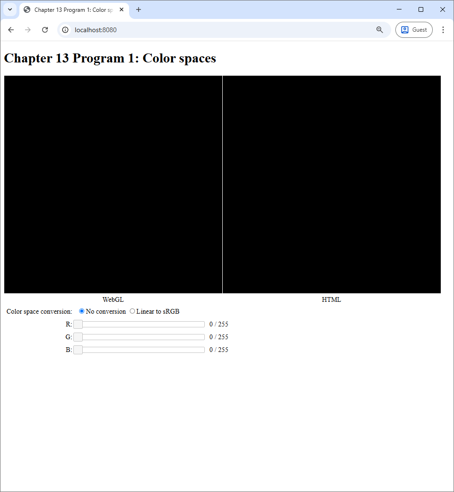
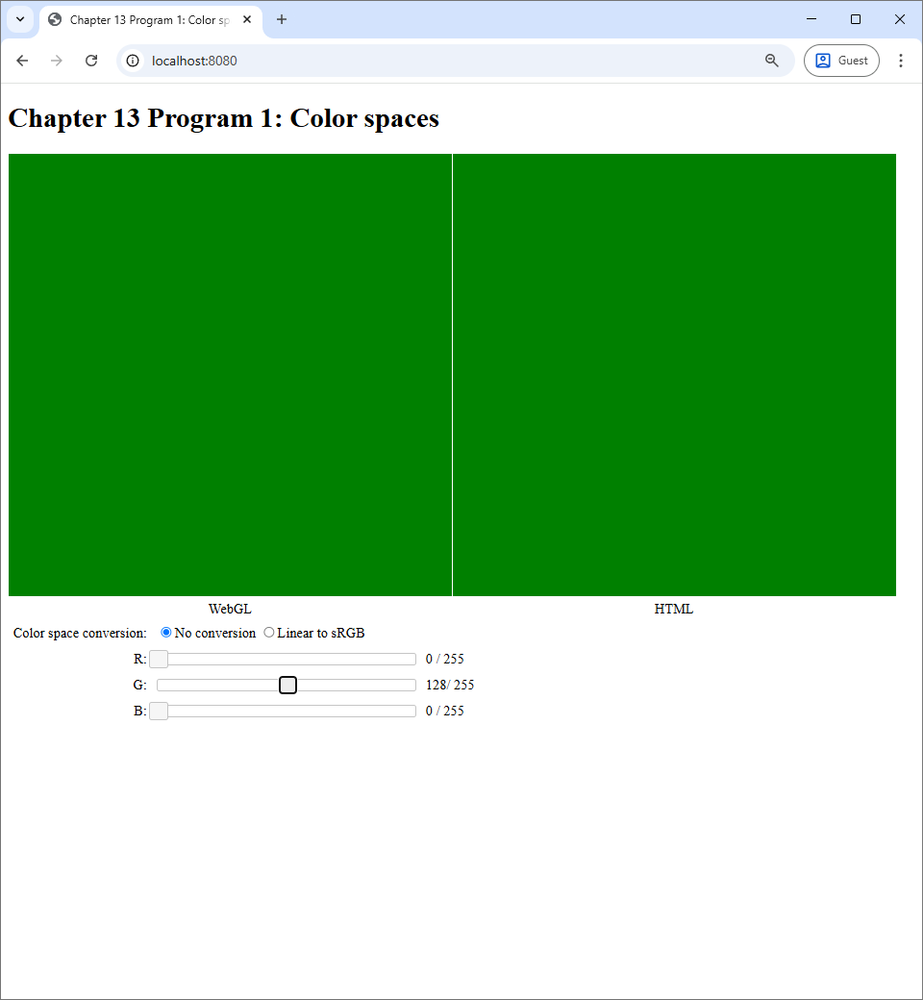

13 Fragment Shaders
We learned that a WebGL program is made up of at least 3 programs: the host Javascript program, the vertex shaders, and the fragment shaders. In the past two chapters, we focused on the vertex shader and saw that it can be used to create complicated shapes in Chapter 11. We also learned that uniform variables can be used in the vertex shaders to create simple animations in the last chapter.
In this chapter, we turn our attention to the fragment shader. Recall from Chapter 7 that the fragment shader has two responsibilities: (1) deciding whether to discard a fragment or not, and (2) computing the color of the fragment if it is not discarded. We will see in this chapter that the fragment shader is very powerful because it determines colors that would finally appear on the screen.
As you might recall from Chapter 2, color is quite a complicated subject in its own right. A programmer must be aware of the color space of each color value they manipulate, and this is especially important when writing a fragment shader. Luckily, there are only two color spaces we need to worry about: linear and sRGB. In Program 1, we will discuss a function that converts from the linear space to the sRGB space and discuss why it is important. This function will be used throughout the rest of the book.
The mechanism that makes the fragment shader powerful is the varying variable, which is a mechanism that allows the vertex shader to pass information to the fragment shader. Varying variables allow use to create color gradients, which we will demonstrate in Program 2.
Moreover, varying variables allows the fragment shader to know about the fragment it is processing. One of the most useful information about the fragment is its position on the screen, and a way to set up the scene so that each fragmeht knows its position is to render a "full screen quad", which we will discuss in Program 3. The fragment position allows us to compute a color as a function of it, which is an image, and we shall see in Program 4 that this image can be very complicated even when our fragment shader is quite simple.
13.1 Program 1: Color spaces
13.1.1 Color spaces and the fragment shader
Recall from Section 2.3 that a color space specifies the mapping from the RGB color cube the actual color that appearas on the screen. The color space used by your web browser is the sRGB color space. So, in an HTML file, when you specify the color #EA8032, which translates to the RGB value of $(234, 128, 50)$ or approximately $(0.92, 0.50, 0.20)$ if we use floating point numbers, the fact that you see the orange color ■ is because the sRGB color spaces chooses to associate $(0.92, 0.50, 0.20)$ with this particular color. We also learn that the sRGB color space is not physical, meaning that a tristimulus value of $0.5$ is not half as powerful (i.e., as bright) as $1.0$. The color space where tristimulus values corresponds to light power emitted by the monitor is the linear color space. We also learns the rule of thumb that all intermediate calculations should be performed in the the linear space while all output values should be in the sRGB space.
How are the above facts and rule apply to how we should write fragment shaders? The first thing to keep in mind is that any color value that appears on the screen is automatically in the sRGB color space. This is simply because it is the color space that the browser uses. For all the previous programs up to this point, this output color is what we assign to the fragment shader's output variable, which is always called fragColor. So, this means that fragColor is always in the sRGB color space. (This will no longer apply when the fragment shader does not output to the screen, but we will talk about this later.)
Second, to follow the "compute in linear, output in sRGB" rule, we should follow another two simple rules when we write our programs.
- All color variables other than
fragColorare in the linear space. - We must convert from linear to sRGB when assigning a value to
fragColor.
Unfortunately, there are no automatic mechanisms such as a compiler that would enforce these rules for us. The program must instead enforce these rules by themself. Being mindful of colors spaces practically means convering colors from one space to another at the right places in your program.
13.1.2 Difference between the color spaces
The main point of Program 1 is to show the reader the visual difference between being mindful and not being mindful of color spaces. When you run the program, you will see what is depicted in the screenshot below.
|  |
{kind=link}
The program acts like a color picker you would see in a painting program like Microsoft Paint, GIMP, or Photoshop. There are three sliders, each corresponding to a tristimulous value in the RGB color space. There are two canvases, one labelled "WebGL" and the other "HTML," that we would show the colors specified by the sliders. The WebGL canvas displays the color through the use of a WebGL program, and the HTML canvas displays the color by manipulating the background-color CSS property of the canvas itself. So, the color shown on the HTML canvas reflects how the web browser normally interprets color values. Lastly, the user can control how the WebGL canvas would process the color specified by the sliders. When the user chooses the "No conversion" radio box, the WebGL canvas would output the color specified by the sliders without performing any calculation on it. However, when the user chooses the "Linear to sRGB" radio box, the WebGL program would treat the color specified by the sliders to be in the linear color space and perform conversion from linear to sRGB before outputting the color to the canvas. Note that the "Linear to sRGB" option is the one consistent with the rules we discussed in the last section, while the "No conversion" option is not.
To see what the options mean visually, let us manipulate the G slider so that the G value is $128 / 256 \approx 0.5$.
|  |
{kind=link}
We can see that the both canvases show the exact same color. This makes sense because, as we said earlier, the web browser's color space is sRGB. So, if the WebGL program just outputs the color without any modification, it would show the exact same color that the browser would natively show. However, if we switch to the "Linear to sRGB" option, we will see that the color in the WebGL canvas becomes brighter.
 |
This behavior is consistent with what we learned in Section 2.3: the same RGB values would appear brighter if it is in the linear color space than when it is in the sRGB color space. Let's take a look at the effect of the linear-to-sRGB conversion to other colors.
TODO: Add images to this figure.
To repeat, the overall effect is that the linear-to-sRGB conversion results in brighter colors compared to directly outputting the color values directly. The exception to this behavior is when all the RGB values are either $0$ or $1$, in which case the converted color would be the same as the direct color. As a result, not performing the linear-to-sRGB conversion in the last step has a visible effect that WebGL renderings would appear dark.
The writer would like to repeat that the reason we need to put a linear-to-sRGB conversion at the last step of a fragment shader is not to make the rendering brighter. We do so because we want to make all color calculations up to that point to be in the linear space so that those calculations make sense according to physics. In this program, there is no calculation other than the conversion. However, the next program has color calculations despite us not writing them down explicitly in our code, so it is important to always stick to the rule even when our WebGL program seems to be very simple.
13.1.3 How the program works
We talked a lot about the linear-to-sRGB conversion and how important it is. Let us look at how it is implemented in code. The vertex shader is exceedingly simple: it just outputs the position fetched from the vertex buffer.
#version 300 es
in vec2 vert_position;
void main() {
gl_Position = vec4(vert_position, 0, 1);
}The fragment shader receives two pieces of information from the hose program though uniform variables. The first piece is color specified by the sliders, represented by the color variable of type vec3. The second piece is the whether the aforementioned color is in the linear color space, represented by the useLinearColorSpace variable of type bool. As usual, the fragment shader outputs a vec4, which we always call fragColor.
#version 300 es
precision highp float;
uniform vec3 color;
uniform bool useLinearColorSpace;
out vec4 fragColor;Let us look at the host program and see how the uniform variables are set.
let r = this.redSlider.slider("value") / 255.0;
let g = this.greenSlider.slider("value") / 255.0;
let b = this.blueSlider.slider("value") / 255.0
let useLinearColorSpace =
$('input[name=colorSpace]:checked').val() === 'linear';
useProgram(this.gl, this.program, () => {
let colorLocation = self.gl.getUniformLocation(self.program, "color");
self.gl.uniform3f(colorLocation, r, g, b);
let useLinearColorSpaceLocation = self.gl.getUniformLocation(
self.program, "useLinearColorSpace");
self.gl.uniform1i(useLinearColorSpaceLocation, useLinearColorSpace);
setupVertexAttribute(
self.gl, self.program, "vert_position", self.vertexBuffer, 2, 8, 0);
drawElements(self.gl, self.indexBuffer, self.gl.TRIANGLES, 6, 0);
});
We can see that the program fetches the tristimulous value r, g, and b from the sliders and convert them to floating point values in the $[0,1]$ inverval by dividing the fetched values with $255$, the maximum value of the sliders. Then, it uses the uniform3f matrix of the WebGL context to set the color uniform variable. For the useLinearColorSpace variable, the value can be obtained by examining whether the checked radio box is the "linear" one. Now, both in Javascript and in GLSL, the useLinearColorSpace are of the boolean types. However, when we set uniform variable, we have to use the uniform1i method, whose name indicates that it is for integer variables, as a substitute because the WebGL API does not have method specifically designed for the boolean type.
The main function of the fragment shader looks at useLinearColorSpace and apply the linear-to-sRGB conversion if the variable is true.
void main() {
if (useLinearColorSpace) {
fragColor = vec4(linearToSrgb(color), 1.0);
} else {
fragColor = vec4(color, 1.0);
}
}The linearToSrgb function converts a vec3 that is meant to represent an RGB value in the linear color space to an RGB value in the sRGB value in color space.
vec3 linearToSrgb(vec3 color) {
return vec3(
linearToSrgbSingle(color.r),
linearToSrgbSingle(color.g),
linearToSrgbSingle(color.b));
}The function applies the same transformation, implemented by the linearToSrgbSingle function to the R, G, and B channels. The linearToSrgbSingle function implements the function
$$
f_{\mathrm{linear}\rightarrow\mathrm{sRGB}}(x) = \begin{cases}
12.92 x, & x \leq 0.0031308 \\
1.055x^{1.0/2.4} - 0.055, & x > 0.0031308
\end{cases}
$$
that we previously discussed in Section 2.3.3.
float linearToSrgbSingle(float c) {
float a = 0.055;
if (c <= 0.0)
return 0.0;
else if (c < 0.0031308) {
return 12.92*c;
} else {
if (c >= 1.0)
return 1.0;
else
return (1.0+a)*pow(c, 1.0/2.4)-a;
}
}From now on, we will always apply linearToSrgb function as the final steps of our fragment shaders. To repeat, we are doing this in order to comply with the rule we set up for ourselves that (1) the final output must be in the sRGB color space, and (2) all intermediate computations should be carried out in the linear color space.
13.2 Program 2: Using varying variables to create color gradients
In this section, we discuss a mechanism that makes the fragment shader extremely poweful, the varying variables. In the programs we have discussed so far, primitives always have a single color. However, with a varying variable, we can render primives whose individual pixels might have different colors, and we will use it to create color gradients that can be seen the following screenshot.
13.2.1 Varying variables
Varying variables are a mechanism for passing information from the vertex shader to the fragment shader. For a piece of information to be passed, we must declare two variables of the same name and the same type: one in the vertex shader, and the other in the fragment shaders. For example, in Program 2, the information we want to pass from the vertex shader to the fragment shader is a vec3 that we use to represent an RGB color value. So, in the vertex shader , we declare a global variable called geom_color as follows.
out vec3 geom_color;Then, in the fragment shader, we declare another variable with the same type and the same name.
in vec3 geom_color;The only difference is that, in the vertex shader, we prefix the declaration with the keyword out, and, in the fragment shader, we instead use the keyword in. The keywords make sense because information always flows from the vertex shader to the fragment shader, so we can think of a varying variable as being an "output" of the vertex shader and also an "input" of the fragment shader. It is the job the vertex shader to assign values to varying variables and the fragment shader to read and process them.
Let us discuss the semantics of varying variables. That is, after the vertex shader assign their values, what values do we expect to see in the fragment shaders when they read the same varying variables? The answer is that it is almost always not the same values that were assigned to by the vertex shader!
To understand how varying variables work, we need to revisit how the graphics pipeline work. Recall from Chapter 7 that the graphics pipeline has multiple stages. The vertex shader controls a step called "vertex processing." This step is followed by two more steps: "primitive assembly" and "rasterization." The fragment shader controls "fragment processing," which is the next step in the process.
When the host program renders a primitive, say with the drawElements method of the WebGL context, it must specify a number of vertices in the vertex buffer. For each of these vertices, WebGL invokes the vertex shader to process each vertex individually. So, if the vertex shader assigns a value to a varying variable, then there would be an independent value associated with each vertex, and values of different vertices can be different. In case of Program 2, geom_color and be red for one vertex, and it can be green for another.
geom_color associated with different vertices.Then, in primitive assembly, vertices belonging to the same primitives are connected, and primitives are simplified. In the end, we are left with points, lines, and triangles such that each individual vertex has a geom_color value associated with it.
In rasterization, each primitive is turned into a number of fragments. The value of the varying variable of a fragment is an interpolation of the the values at the vertices that make up the primitive. The type of interpolation used depends on the primitive type.
- If the primitive is a point, then the value is copied directly from the vertex.
- If the primitive is a line, then the value is a linear interpolation between the values at the endpoints of the line.
- If the primitive is a triangle, then the value is an interpolation computed using the barycentric coordinates of the fragment position.
Lastly, in fragment processing, WebGL invokes the fragment shader for each of the generated fragments, and the fragment shader sees the value that was interpolated by the rasterization process.
We can now see why varying variables makes the fragment shader powerful. With a varying variable, a fragment shader sees a different value at each vertex, which means that it can now assign different colors to different pixels in a controlled manner. This capability allows us to create more complicated images than what we have been achieved before.
13.2.2 Color gradients
Now that we understand how varying variables work, it is time to see it in action. The color gradients that we see in Figure 13.5 is a direct result of rendering a mesh where each vertex has an extra attribute, color, which is represented by the vert_color attribute variable. In the host program createBuffers method, we set up the mesh as follows.
createBuffers() {
let vertexData = [
-0.5, -0.5, // First vertex
1.0, 1.0, 0.0, // is yellow.
0.5, -0.5, // Second vertex
0.0, 1.0, 1.0, // is cyan.
0.5, 0.5, // Third vertex
1.0, 0.0, 1.0, // is magenta.
-0.5, 0.5, // Fourth vertex
1.0, 1.0, 1.0 // is white.
];
this.vertexBuffer = createVertexBuffer(
this.gl, new Float32Array(vertexData));
let indexData = [
0, 1, 2,
0, 2, 3
];
this.indexBuffer = createIndexBuffer(
this.gl, new Int32Array(indexData));
}The mesh has four vertices where each has it own color, and the mesh is made up of two triangles, forming a square. In the vertex shader, we assign the attribute to the geom_color varying variable, which basically tells WebGL to interpolate the vertex colors during rasterization.
#version 300 es
in vec2 vert_position;
in vec3 vert_color;
out vec3 geom_color;
void main() {
gl_Position = vec4(vert_position, 0, 1);
geom_color = vert_color;
}The fragment shader, however, is a little more complicated. The interpolated color is available to the fragment shader via the geom_color varying variable. It is tempting to just set the output color to this value. Nevertheless, we have to remember the rule we discussed in the last section: we must apply linear-to-sRGB conversion as the last step in our fragment shader. This is exactly what is done in the main function of the fragment shader.
in geom_color;
void main() {
fragColor = vec4(linearToSrgb(geom_color), 1.0);
}The linearToSrgb function is the same one we discussed in the last section. To make the whole program work, we must set up the attributes and render the mesh in the host program, and the code that does this is as follows.
useProgram(this.gl, this.program, () => {
setupVertexAttribute(
self.gl, self.program, "vert_position", self.vertexBuffer, 2, 4*5, 0);
setupVertexAttribute(
self.gl, self.program, "vert_color", self.vertexBuffer, 3, 4*5, 4*2)
drawElements(self.gl, self.indexBuffer, self.gl.TRIANGLES, 6, 0);
});The reader might recall that we apply the linear-to-sRGB conversion because we recognize that we want the output color to be in the sRGB space while we want all intermediate calculations to be in the linear space. Paradoxically, the code of Program 2 does not specify any color calculations at all. All it does is copying color values from one variable to another. There are no additions, subtractions, or multiplications of color variables in the code! However, although we do not specify any calculation explicitly, there are implicit calculations involving colors: the color interpolation carried out by the graphics pipeline in the rasterization step. We want all color interpolations conducted in the linear space. So, to recognize this fact, we apply linear-to-sRGB conversion before we set the output of the fragment shader.
Not applying the linear-to-sRGB conversion at the end can result in a very different color gradient, which is shown in Figure 13.9. We emphasize that Figure 13.9(a) is RIGHT, and Figure 13.9(b) is WRONG. A competent graphics programmer should not allow Figure 13.9(b) to happen. The reason is that interpolation carried out by the graphics pipeline is linear in nature, and this calculation must be carried out in the linear color space in order for it to make any mathematical sense. Not applying the linear-to-sRGB in the last step means that the colors being interpolated by the graphics pipeline are in the sRGB color space. This is not mathematically sound and is therefore wrong. It is thus important to always apply linear-to-sRGB at the last step even though the code does not directly specify any calculations on color values.